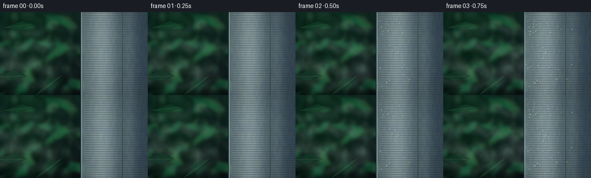
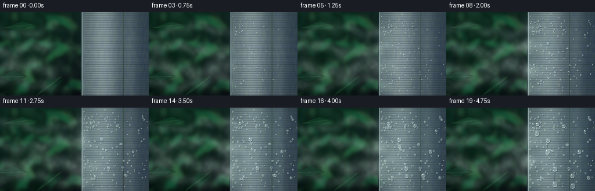
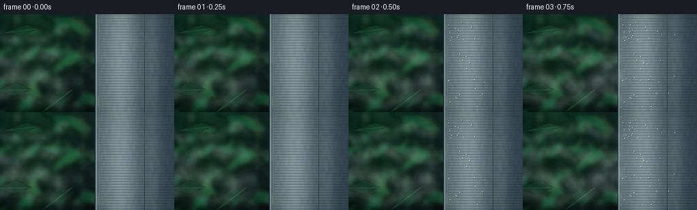
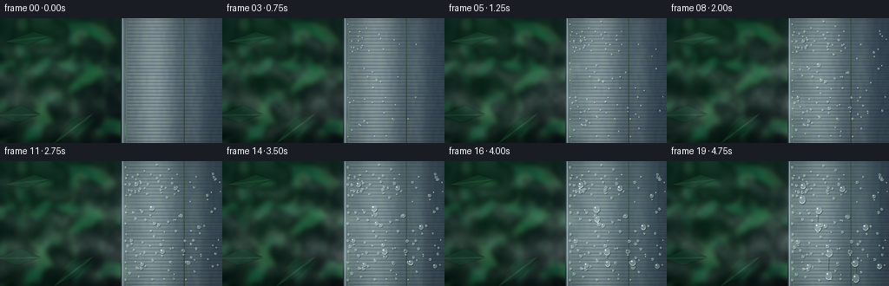
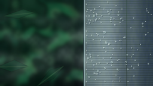

CODING AGENTS AS PIXEL WORLD MODELS
traex/GPT-5.6-Sol · phygen_113
点击播放 · 原生 RGB 像素
逐轮保存的候选
回放视频、检查图与代码变化。
每份候选均可单独播放。实际图片检查记录在下方工具轨迹中。
候选 01播放与检查图
点击播放 · 原生 RGB 像素


展开代码变化
--- 上一保存版本
+++ 本次保存版本
@@ -0,0 +1,196 @@
+from pathlib import Path
+import math
+import numpy as np
+from PIL import Image, ImageDraw, ImageFilter
+import artifact_io
+
+# Deterministic, entirely procedural macro timelapse.
+W,H,N = 256,144,20
+S=3
+w,h=W*S,H*S
+rng=np.random.default_rng(113)
+
+def smooth_noise(width,height,smallx,smally,seed):
+ rr=np.random.default_rng(seed)
+ a=(rr.random((smally,smallx))*255).astype('uint8')
+ return np.asarray(Image.fromarray(a).resize((width,height),Image.Resampling.BICUBIC),dtype=float)/255.
+
+# Deep, humid rainforest background with soft depth of field.
+yy,xx=np.mgrid[0:h,0:w]
+base=np.zeros((h,w,3),dtype=float)
+base[:,:,0]=8 + 8*(1-yy/h) + 8*(xx/w)
+base[:,:,1]=24 + 25*(1-yy/h) + 5*np.sin(xx/85)
+base[:,:,2]=22 + 16*(1-yy/h)
+base += (smooth_noise(w,h,22,13,8)[:,:,None]-.5)*12
+bg=Image.fromarray(np.uint8(np.clip(base,0,255)),'RGB')
+# out-of-focus foliage and humid bokeh
+fol=Image.new('RGBA',(w,h),(0,0,0,0)); d=ImageDraw.Draw(fol,'RGBA')
+# distant trunks
+d.rounded_rectangle((16*S,-10,33*S,h+10),radius=7*S,fill=(18,39,29,150))
+d.rounded_rectangle((81*S,-10,93*S,h+10),radius=5*S,fill=(10,32,25,125))
+d.rounded_rectangle((117*S,-10,126*S,h+10),radius=4*S,fill=(25,47,35,100))
+# broad leaves on left, intentionally layered and blurred
+leaf_cols=[(20,75,49,190),(27,95,61,190),(39,111,68,170),(14,59,43,210),(62,116,72,120)]
+for i in range(42):
+ cx=rng.uniform(-18,139)*S; cy=rng.uniform(-15,158)*S
+ rx=rng.uniform(7,23)*S; ry=rng.uniform(3,10)*S
+ ang=rng.uniform(-55,55)
+ col=leaf_cols[i%len(leaf_cols)]
+ leaf=Image.new('RGBA',(w,h),(0,0,0,0)); ld=ImageDraw.Draw(leaf,'RGBA')
+ ld.ellipse((cx-rx,cy-ry,cx+rx,cy+ry),fill=col)
+ leaf=leaf.rotate(ang,center=(cx,cy),resample=Image.Resampling.BICUBIC)
+ fol=Image.alpha_composite(fol,leaf)
+# bright circular bokeh, rainforest light in distance
+for i in range(22):
+ cx=rng.uniform(0,140)*S; cy=rng.uniform(0,140)*S; r=rng.uniform(2,8)*S
+ d=ImageDraw.Draw(fol,'RGBA')
+ d.ellipse((cx-r,cy-r,cx+r,cy+r),fill=(100,170,111,int(rng.uniform(14,42))))
+fol=fol.filter(ImageFilter.GaussianBlur(3.5*S))
+bg=Image.alpha_composite(bg.convert('RGBA'),fol)
+# foreground crisp leaf silhouettes for depth
+fg=Image.new('RGBA',(w,h),(0,0,0,0)); fd=ImageDraw.Draw(fg,'RGBA')
+for pts,col in [([(-5,112),(24,100),(47,111),(19,120)],(11,50,34,220)),
+ ([(5,27),(39,15),(57,21),(31,31)],(16,61,39,205)),
+ ([(62,144),(83,117),(107,110),(89,132)],(11,45,31,185))]:
+ fd.polygon([(x*S,y*S) for x,y in pts],fill=col)
+ x0,y0=pts[0]; x2,y2=pts[2]
+ fd.line((x0*S,y0*S,x2*S,y2*S),fill=(62,104,67,100),width=S)
+bg=Image.alpha_composite(bg,fg.filter(ImageFilter.GaussianBlur(.45*S)))
+
+# Static cold brushed-steel cylinder occupying right half.
+# Curvature makes the material unmistakably metallic.
+edge=139*S
+metal=np.zeros((h,w,4),dtype=np.uint8)
+X=np.arange(w)[None,:]/S
+Y=np.arange(h)[:,None]/S
+mask=X>=139
+u=np.clip((X-139)/117,0,1)
+shine=52*np.exp(-((u-.34)/.21)**2) + 18*np.exp(-((u-.73)/.09)**2)
+shade=24*u + 12*(u**2)
+mn=smooth_noise(w,h,90,18,33)
+fine=smooth_noise(w,h,180,72,35)
+# brushed steel has long horizontal micro-striations
+stripes=4*np.sin(Y*3.1)+2*np.sin(Y*10.7)
+R=91+shine-shade + (mn-.5)*8 + stripes
+G=109+shine-shade + (mn-.5)*8 + stripes
+B=114+shine*.95-shade*.72 + (fine-.5)*7 + stripes
+metal[:,:,:3]=np.uint8(np.clip(np.stack([np.broadcast_to(R,(h,w)),np.broadcast_to(G,(h,w)),np.broadcast_to(B,(h,w))],axis=2),0,255))
+metal[:,:,3]=np.where(np.broadcast_to(mask,(h,w)),255,0).astype(np.uint8)
+met=Image.fromarray(metal,'RGBA')
+# rim/reflection at metal edge and narrow cyan cold cast
+md=ImageDraw.Draw(met,'RGBA')
+md.rectangle((139*S,0,141*S,h),fill=(29,48,51,255))
+md.line((141*S,0,141*S,h),fill=(183,213,215,220),width=S)
+md.line((144*S,0,144*S,h),fill=(220,236,235,85),width=S)
+md.line((212*S,0,212*S,h),fill=(225,240,240,45),width=S)
+# fine horizontal brushing
+for y in range(2,H,4):
+ a=18+(y*7)%18
+ md.line((146*S,y*S,w,y*S),fill=(230,243,242,a),width=1)
+scene0=Image.alpha_composite(bg,met)
+
+# Nucleation sites. Earlier near the contact edge, later farther across the steel.
+drops=[]
+for i in range(125):
+ x=float(rng.uniform(146,254)); y=float(rng.uniform(2,142))
+ start=int(np.clip(2.0+(x-142)/18+rng.normal(0,2.2),2,15))
+ maxr=float(rng.uniform(.45,1.65)*(1.45 if rng.random()<.15 else 1.0))
+ drops.append((x,y,start,maxr,rng.uniform(0,6.28)))
+# hero droplets that swell and then creep downward
+hero=[(157,26,3,2.8,0.2),(175,54,5,3.6,1.2),(202,31,8,3.0,2.3),
+ (229,76,10,3.2,1.4),(187,104,7,3.8,0.7),(245,121,11,2.8,2.8),
+ (151,91,4,2.4,1.7),(217,117,9,3.4,0.1)]
+drops += hero
+
+# A few rivulet anchors that form only after neighboring beads coalesce.
+rivulets=[(175,54,13,22),(187,104,14,28),(217,117,16,18),(157,26,15,18)]
+
+def mist_layer(fi):
+ # Advancing plumes hit x=142 over first second, then continuously curl along it.
+ Yg,Xg=np.mgrid[0:h,0:w]/S
+ reach=min(166,91+fi*16)
+ a=np.zeros((h,w),float)
+ # coherent streamwise wisps, each with sinusoidal curl
+ bands=[(31,8,0.0,30),(64,10,1.5,46),(98,13,3.1,56),(123,9,4.3,34)]
+ for k,(cy,sig,ph,amp) in enumerate(bands):
+ center=cy + 7*np.sin(Xg/23 + ph + fi*.42) + 3*np.sin(Xg/8-ph)
+ # moving soft nose and a tail from outside the left side
+ nose=1/(1+np.exp((Xg-reach-k*2)/4.8))
+ density=np.exp(-((Yg-center)/sig)**2)*nose
+ density*=.63+.37*np.sin(Xg/12 + ph + fi*.63)**2
+ a += density*amp
+ # impact cloud blooms along the frigid rim after contact
+ if fi>=3:
+ q=min(1,(fi-2)/5)
+ impact=np.exp(-((Xg-141)/13)**2)*(np.exp(-((Yg-54-5*np.sin(fi*.5))/34)**2)+
+ .75*np.exp(-((Yg-106+4*np.cos(fi*.4))/27)**2))
+ # rippling tendrils curling back to the left
+ impact *= (.72+.28*np.sin(Yg/7 + fi*.7))
+ a += impact*38*q
+ tex=.72+.28*smooth_noise(w,h,45,25,400+fi)
+ a=np.clip(a*tex,0,75)
+ arr=np.zeros((h,w,4),dtype=np.uint8)
+ arr[:,:,:3]=np.array([205,228,221],dtype=np.uint8)
+ arr[:,:,3]=a.astype(np.uint8)
+ return Image.fromarray(arr,'RGBA').filter(ImageFilter.GaussianBlur(1.2*S))
+
+def draw_drop(layer,x,y,r,alpha=230,elong=1.0):
+ dr=ImageDraw.Draw(layer,'RGBA'); x*=S;y*=S;r*=S
+ ry=r*elong
+ # contact shadow, glass body, dark lower rim, bright pinpoint reflection
+ dr.ellipse((x-r*.98+S*.65,y-ry*.92+S*.85,x+r*1.08+S*.65,y+ry*1.08+S*.85),fill=(21,42,45,int(alpha*.35)))
+ dr.ellipse((x-r,y-ry,x+r,y+ry),fill=(161,196,195,int(alpha*.45)),outline=(218,237,234,int(alpha*.65)),width=max(1,S//2))
+ dr.arc((x-r,y-ry,x+r,y+ry),15,150,fill=(241,252,249,alpha),width=max(1,int(r*.24)))
+ dr.arc((x-r*.9,y-ry*.9,x+r*.9,y+ry*.9),165,300,fill=(49,81,84,int(alpha*.72)),width=max(1,int(r*.18)))
+ hl=max(1,r*.22)
+ dr.ellipse((x-r*.42-hl,y-ry*.43-hl,x-r*.42+hl,y-ry*.43+hl),fill=(255,255,252,min(255,alpha+20)))
+
+frames=[]
+for fi in range(N):
+ im=scene0.copy()
+ # mist is behind condensation but spills partially over the metal at impact
+ im=Image.alpha_composite(im,mist_layer(fi))
+ wet=Image.new('RGBA',(w,h),(0,0,0,0))
+ wd=ImageDraw.Draw(wet,'RGBA')
+ # broad wet sheen progressively spreads from rim across steel
+ spread=min(1,max(0,(fi-2)/14))
+ if spread>0:
+ wetedge=(145+spread*100)*S
+ wd.rectangle((144*S,0,wetedge,h),fill=(86,132,136,int(13+spread*15)))
+ wd.line((145*S,0,wetedge,h),fill=(211,235,232,int(11+spread*12)),width=1)
+ # runnels: water coalesces and visibly falls late in timelapse
+ for x0,y0,st,length in rivulets:
+ if fi>=st:
+ prog=(fi-st+1)/(N-st)
+ trail=length*prog
+ x=x0+1.0*math.sin(fi*.6+x0)
+ wd.line([(x*S,(y0+1)*S),((x-.4)*S,(y0+trail)*S)],fill=(37,66,70,95),width=2*S)
+ wd.line([((x-.6)*S,(y0+2)*S),((x-.9)*S,(y0+trail-1)*S)],fill=(220,240,237,100),width=max(1,S//2))
+ draw_drop(wet,x,y0+trail,2.1+prog*1.5,245,1.35)
+ for x,y,st,mr,ph in drops:
+ if fi<st: continue
+ age=fi-st+1
+ r=min(mr, .28+mr*math.sqrt(age/max(1,N-st)))
+ # tiny downward creep of mature ordinary beads
+ yy2=y + max(0,age-8)**1.35*.10*(mr/2)
+ draw_drop(wet,x,yy2,r,210 if r<1 else 235,1.0+max(0,r-2)*.09)
+ # rim gets visibly beaded first
+ if fi>=3:
+ for j in range(13):
+ st=3+j%4
+ if fi>=st:
+ y=7+j*10.8+2*math.sin(j*2.1)
+ r=min(1.35,.32+.10*(fi-st))
+ draw_drop(wet,144.5+j%2*.8,y,r,225)
+ im=Image.alpha_composite(im,wet)
+ # subtle cool vignette and time-lapse exposure stability
+ arr=np.asarray(im.convert('RGB'),dtype=float)
+ yf,xf=np.mgrid[0:h,0:w]
+ vig=1-.16*np.clip(((xf-w/2)/(w*.72))**2+((yf-h/2)/(h*.75))**2,0,1)
+ arr*=vig[:,:,None]
+ out=Image.fromarray(np.uint8(np.clip(arr,0,255))).resize((W,H),Image.Resampling.LANCZOS)
+ frames.append(np.asarray(out,dtype=np.uint8))
+
+frames=np.stack(frames)
+artifact_io.save(frames,Path(__file__).resolve().parent)
+print('saved',frames.shape,frames.dtype)
候选 02播放与检查图
点击播放 · 原生 RGB 像素


展开代码变化
--- 上一保存版本
+++ 本次保存版本
@@ -111,7 +111,7 @@
reach=min(166,91+fi*16)
a=np.zeros((h,w),float)
# coherent streamwise wisps, each with sinusoidal curl
- bands=[(31,8,0.0,30),(64,10,1.5,46),(98,13,3.1,56),(123,9,4.3,34)]
+ bands=[(31,8,0.0,47),(64,10,1.5,68),(98,13,3.1,78),(123,9,4.3,53)]
for k,(cy,sig,ph,amp) in enumerate(bands):
center=cy + 7*np.sin(Xg/23 + ph + fi*.42) + 3*np.sin(Xg/8-ph)
# moving soft nose and a tail from outside the left side
@@ -126,9 +126,9 @@
.75*np.exp(-((Yg-106+4*np.cos(fi*.4))/27)**2))
# rippling tendrils curling back to the left
impact *= (.72+.28*np.sin(Yg/7 + fi*.7))
- a += impact*38*q
+ a += impact*73*q
tex=.72+.28*smooth_noise(w,h,45,25,400+fi)
- a=np.clip(a*tex,0,75)
+ a=np.clip(a*tex,0,125)
arr=np.zeros((h,w,4),dtype=np.uint8)
arr[:,:,:3]=np.array([205,228,221],dtype=np.uint8)
arr[:,:,3]=a.astype(np.uint8)
可观测工具轨迹
实际执行的命令与返回图片。
命令 1exit 0
/bin/bash -lc "cat prompt.txt && printf '\\n---RULES---\\n' && cat GENERATION_RULES.md && printf '\\n---SPEC---\\n' && cat task_spec.json"
命令 2exit 0
/bin/bash -lc "find . -maxdepth 2 -type f -printf '%p\\n' | sort"
命令 3exit 0
/bin/bash -lc 'cat artifact_io.py'
命令 4exit 0
/bin/bash -lc "cat > generate.py <<'PY'
from pathlib import Path
import math
import numpy as np
from PIL import Image, ImageDraw, ImageFilter
import artifact_io
# Deterministic, entirely procedural macro timelapse.
W,H,N = 256,144,20
S=3
w,h=W*S,H*S
rng=np.random.default_rng(113)
def smooth_noise(width,height,smallx,smally,seed):
rr=np.random.default_rng(seed)
a=(rr.random((smally,smallx))*255).astype('uint8')
return np.asarray(Image.fromarray(a).resize((width,height),Image.Resampling.BICUBIC),dtype=float)/255.
# Deep, humid rainforest background with soft depth of field.
yy,xx=np.mgrid[0:h,0:w]
base=np.zeros((h,w,3),dtype=float)
base[:,:,0]=8 + 8*(1-yy/h) + 8*(xx/w)
base[:,:,1]=24 + 25*(1-yy/h) + 5*np.sin(xx/85)
base[:,:,2]=22 + 16*(1-yy/h)
base += (smooth_noise(w,h,22,13,8)[:,:,None]-.5)*12
bg=Image.fromarray(np.uint8(np.clip(base,0,255)),'RGB')
# out-of-focus foliage and humid bokeh
fol=Image.new('RGBA',(w,h),(0,0,0,0)); d=ImageDraw.Draw(fol,'RGBA')
# distant trunks
d.rounded_rectangle((16*S,-10,33*S,h+10),radius=7*S,fill=(18,39,29,150))
d.rounded_rectangle((81*S,-10,93*S,h+10),radius=5*S,fill=(10,32,25,125))
d.rounded_rectangle((117*S,-10,126*S,h+10),radius=4*S,fill=(25,47,35,100))
# broad leaves on left, intentionally layered and blurred
leaf_cols=[(20,75,49,190),(27,95,61,190),(39,111,68,170),(14,59,43,210),(62,116,72,120)]
for i in range(42):
cx=rng.uniform(-18,139)*S; cy=rng.uniform(-15,158)*S
rx=rng.uniform(7,23)*S; ry=rng.uniform(3,10)*S
ang=rng.uniform(-55,55)
col=leaf_cols[i%len(leaf_cols)]
leaf=Image.new('RGBA',(w,h),(0,0,0,0)); ld=ImageDraw.Draw(leaf,'RGBA')
ld.ellipse((cx-rx,cy-ry,cx+rx,cy+ry),fill=col)
leaf=leaf.rotate(ang,center=(cx,cy),resample=Image.Resampling.BICUBIC)
fol=Image.alpha_composite(fol,leaf)
# bright circular bokeh, rainforest light in distance
for i in range(22):
cx=rng.uniform(0,140)*S; cy=rng.uniform(0,140)*S; r=rng.uniform(2,8)*S
d=ImageDraw.Draw(fol,'RGBA')
d.ellipse((cx-r,cy-r,cx+r,cy+r),fill=(100,170,111,int(rng.uniform(14,42))))
fol=fol.filter(ImageFilter.GaussianBlur(3.5*S))
bg=Image.alpha_composite(bg.convert('RGBA'),fol)
# foreground crisp leaf silhouettes for depth
fg=Image.new('RGBA',(w,h),(0,0,0,0)); fd=ImageDraw.Draw(fg,'RGBA')
for pts,col in [([(-5,112),(24,100),(47,111),(19,120)],(11,50,34,220)),
([(5,27),(39,15),(57,21),(31,31)],(16,61,39,205)),
([(62,144),(83,117),(107,110),(89,132)],(11,45,31,185))]:
fd.polygon([(x*S,y*S) for x,y in pts],fill=col)
x0,y0=pts[0]; x2,y2=pts[2]
fd.line((x0*S,y0*S,x2*S,y2*S),fill=(62,104,67,100),width=S)
bg=Image.alpha_composite(bg,fg.filter(ImageFilter.GaussianBlur(.45*S)))
# Static cold brushed-steel cylinder occupying right half.
# Curvature makes the material unmistakably metallic.
edge=139*S
metal=np.zeros((h,w,4),dtype=np.uint8)
X=np.arange(w)[None,:]/S
Y=np.arange(h)[:,None]/S
mask=X>=139
u=np.clip((X-139)/117,0,1)
shine=52*np.exp(-((u-.34)/.21)**2) + 18*np.exp(-((u-.73)/.09)**2)
shade=24*u + 12*(u**2)
mn=smooth_noise(w,h,90,18,33)
fine=smooth_noise(w,h,180,72,35)
# brushed steel has long horizontal micro-striations
stripes=4*np.sin(Y*3.1)+2*np.sin(Y*10.7)
R=91+shine-shade + (mn-.5)*8 + stripes
G=109+shine-shade + (mn-.5)*8 + stripes
B=114+shine*.95-shade*.72 + (fine-.5)*7 + stripes
metal[:,:,:3]=np.uint8(np.clip(np.stack([np.broadcast_to(R,(h,w)),np.broadcast_to(G,(h,w)),np.broadcast_to(B,(h,w))],axis=2),0,255))
metal[:,:,3]=np.where(np.broadcast_to(mask,(h,w)),255,0).astype(np.uint8)
met=Image.fromarray(metal,'RGBA')
# rim/reflection at metal edge and narrow cyan cold cast
md=ImageDraw.Draw(met,'RGBA')
md.rectangle((139*S,0,141*S,h),fill=(29,48,51,255))
md.line((141*S,0,141*S,h),fill=(183,213,215,220),width=S)
md.line((144*S,0,144*S,h),fill=(220,236,235,85),width=S)
md.line((212*S,0,212*S,h),fill=(225,240,240,45),width=S)
# fine horizontal brushing
for y in range(2,H,4):
a=18+(y*7)%18
md.line((146*S,y*S,w,y*S),fill=(230,243,242,a),width=1)
scene0=Image.alpha_composite(bg,met)
# Nucleation sites. Earlier near the contact edge, later farther across the steel.
drops=[]
for i in range(125):
x=float(rng.uniform(146,254)); y=float(rng.uniform(2,142))
start=int(np.clip(2.0+(x-142)/18+rng.normal(0,2.2),2,15))
maxr=float(rng.uniform(.45,1.65)*(1.45 if rng.random()<.15 else 1.0))
drops.append((x,y,start,maxr,rng.uniform(0,6.28)))
# hero droplets that swell and then creep downward
hero=[(157,26,3,2.8,0.2),(175,54,5,3.6,1.2),(202,31,8,3.0,2.3),
(229,76,10,3.2,1.4),(187,104,7,3.8,0.7),(245,121,11,2.8,2.8),
(151,91,4,2.4,1.7),(217,117,9,3.4,0.1)]
drops += hero
# A few rivulet anchors that form only after neighboring beads coalesce.
rivulets=[(175,54,13,22),(187,104,14,28),(217,117,16,18),(157,26,15,18)]
def mist_layer(fi):
# Advancing plumes hit x=142 over first second, then continuously curl along it.
Yg,Xg=np.mgrid[0:h,0:w]/S
reach=min(166,91+fi*16)
a=np.zeros((h,w),float)
# coherent streamwise wisps, each with sinusoidal curl
bands=[(31,8,0.0,30),(64,10,1.5,46),(98,13,3.1,56),(123,9,4.3,34)]
for k,(cy,sig,ph,amp) in enumerate(bands):
center=cy + 7*np.sin(Xg/23 + ph + fi*.42) + 3*np.sin(Xg/8-ph)
# moving soft nose and a tail from outside the left side
nose=1/(1+np.exp((Xg-reach-k*2)/4.8))
density=np.exp(-((Yg-center)/sig)**2)*nose
density*=.63+.37*np.sin(Xg/12 + ph + fi*.63)**2
a += density*amp
# impact cloud blooms along the frigid rim after contact
if fi>=3:
q=min(1,(fi-2)/5)
impact=np.exp(-((Xg-141)/13)**2)*(np.exp(-((Yg-54-5*np.sin(fi*.5))/34)**2)+
.75*np.exp(-((Yg-106+4*np.cos(fi*.4))/27)**2))
# rippling tendrils curling back to the left
impact *= (.72+.28*np.sin(Yg/7 + fi*.7))
a += impact*38*q
tex=.72+.28*smooth_noise(w,h,45,25,400+fi)
a=np.clip(a*tex,0,75)
arr=np.zeros((h,w,4),dtype=np.uint8)
arr[:,:,:3]=np.array([205,228,221],dtype=np.uint8)
arr[:,:,3]=a.astype(np.uint8)
return Image.fromarray(arr,'RGBA').filter(ImageFilter.GaussianBlur(1.2*S))
def draw_drop(layer,x,y,r,alpha=230,elong=1.0):
dr=ImageDraw.Draw(layer,'RGBA'); x*=S;y*=S;r*=S
ry=r*elong
# contact shadow, glass body, dark lower rim, bright pinpoint reflection
dr.ellipse((x-r*.98+S*.65,y-ry*.92+S*.85,x+r*1.08+S*.65,y+ry*1.08+S*.85),fill=(21,42,45,int(alpha*.35)))
dr.ellipse((x-r,y-ry,x+r,y+ry),fill=(161,196,195,int(alpha*.45)),outline=(218,237,234,int(alpha*.65)),width=max(1,S//2))
dr.arc((x-r,y-ry,x+r,y+ry),15,150,fill=(241,252,249,alpha),width=max(1,int(r*.24)))
dr.arc((x-r*.9,y-ry*.9,x+r*.9,y+ry*.9),165,300,fill=(49,81,84,int(alpha*.72)),width=max(1,int(r*.18)))
hl=max(1,r*.22)
dr.ellipse((x-r*.42-hl,y-ry*.43-hl,x-r*.42+hl,y-ry*.43+hl),fill=(255,255,252,min(255,alpha+20)))
frames=[]
for fi in range(N):
im=scene0.copy()
# mist is behind condensation but spills partially over the metal at impact
im=Image.alpha_composite(im,mist_layer(fi))
wet=Image.new('RGBA',(w,h),(0,0,0,0))
wd=ImageDraw.Draw(wet,'RGBA')
# broad wet sheen progressively spreads from rim across steel
spread=min(1,max(0,(fi-2)/14))
if spread>0:
wetedge=(145+spread*100)*S
wd.rectangle((144*S,0,wetedge,h),fill=(86,132,136,int(13+spread*15)))
wd.line((145*S,0,wetedge,h),fill=(211,235,232,int(11+spread*12)),width=1)
# runnels: water coalesces and visibly falls late in timelapse
for x0,y0,st,length in rivulets:
if fi>=st:
prog=(fi-st+1)/(N-st)
trail=length*prog
x=x0+1.0*math.sin(fi*.6+x0)
wd.line([(x*S,(y0+1)*S),((x-.4)*S,(y0+trail)*S)],fill=(37,66,70,95),width=2*S)
wd.line([((x-.6)*S,(y0+2)*S),((x-.9)*S,(y0+trail-1)*S)],fill=(220,240,237,100),width=max(1,S//2))
draw_drop(wet,x,y0+trail,2.1+prog*1.5,245,1.35)
for x,y,st,mr,ph in drops:
if fi<st: continue
age=fi-st+1
r=min(mr, .28+mr*math.sqrt(age/max(1,N-st)))
# tiny downward creep of mature ordinary beads
yy2=y + max(0,age-8)**1.35*.10*(mr/2)
draw_drop(wet,x,yy2,r,210 if r<1 else 235,1.0+max(0,r-2)*.09)
# rim gets visibly beaded first
if fi>=3:
for j in range(13):
st=3+j%4
if fi>=st:
y=7+j*10.8+2*math.sin(j*2.1)
r=min(1.35,.32+.10*(fi-st))
draw_drop(wet,144.5+j%2*.8,y,r,225)
im=Image.alpha_composite(im,wet)
# subtle cool vignette and time-lapse exposure stability
arr=np.asarray(im.convert('RGB'),dtype=float)
yf,xf=np.mgrid[0:h,0:w]
vig=1-.16*np.clip(((xf-w/2)/(w*.72))**2+((yf-h/2)/(h*.75))**2,0,1)
arr*=vig[:,:,None]
out=Image.fromarray(np.uint8(np.clip(arr,0,255))).resize((W,H),Image.Resampling.LANCZOS)
frames.append(np.asarray(out,dtype=np.uint8))
frames=np.stack(frames)
artifact_io.save(frames,Path(__file__).resolve().parent)
print('saved',frames.shape,frames.dtype)
PY
python generate.py"命令 5exit 0
/bin/bash -lc "python generate.py && python - <<'PY'
from pathlib import Path
import numpy as np
from PIL import Image
p=Path('.')
a=np.load('pixels.npz')['pixels']
print('pixels',a.shape,a.dtype,'frames',len(list((p/'frames').glob('*.png'))))
for f in ['pixels.npz','index.html','inspection.png','transition_check.png','generate.py']:
print(f,(p/f).stat().st_size)
PY"视觉工具实际返回图片 1

视觉工具实际返回图片 2

保存候选 2 份；完成命令 5 次；可验证图片返回 2 张。原始 API 响应与完整日志保留在本地。